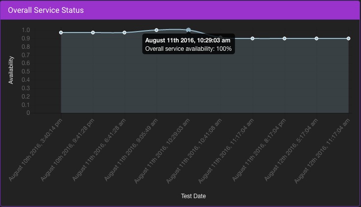

<div id="mainUserGuideDiv" class="animated fadeIn row">
    <div class="col-md-10 col-md-offset-1">

        <div class="jumbotron">
            <h1>User Guide</h1><br/>
            <div class="list-group" ng-click="click()">
                <p class="text-primary">Welcome to the RASTA user guide</p>
                <button ng-init="show=1" ng-click="show=1" type="button"
                        class="list-group-item list-group-item-action active">Overview
                </button>
                <button id="GS" ng-click="show=2" type="button"
                        class="list-group-item list-group-item-action">Getting Started
                </button>
                <button id="CWS" ng-click="show = 3" type="button" class="list-group-item list-group-item-action">Config
                    Web Services
                </button>
                <button id="TFS" ng-click="show = 4" type="button" class="list-group-item list-group-item-action">Test
                    Center
                </button>
                <button id="OT" ng-click="show = 5" type="button" class="list-group-item list-group-item-action">Open
                    Tickets
                </button>
                <button id="GV" ng-click="show=6" type="button"
                        class="list-group-item list-group-item-action">
                    Video Guide
                </button>
            </div>
        </div>

        <div class="jumbotron">
            <div ng-show="show==1" class="ng-hide">
                <p class="text-info title"><strong>Overview of RASTA</strong></p>
                <hr>
                <hr>
                <h4><strong>What is RASTA?</strong></h4>
                <p>
                    RASTA stands for <strong>REST API Service Task Assessor</strong> and it is a web application that
                    allows users to
                    test REST API web services. It provides tools for administrators to help manage the overall
                    performance of web services. These tools include a UI for the admins to quickly see and analyze web
                    services. RASTA has many features that allow admins to better manage those web services including:
                </p>
                <div class="lists">
                    <ul>
                        <li>Uploading of web services via Apache log files/JSON files</li>
                        <li>Adding/editing/deleting web services</li>
                        <li>Performing individual testing of specific web services</li>
                        <li>Ticketing system based on scheduled testing</li>
                    </ul>
                </div>
                <hr>
                <h4><strong>Why RASTA?</strong></h4>
                <p>
                    The RASTA project was created in order to have a better way to manage web services. Although this
                    project was directly related to the web services of LMMP, the implementation of RASTA was done in a
                    way that would allow the testing of any REST API web services. Being able to view the overall
                    performance of web services allows for better management of web applications that can be affected by
                    quality of service interruptions.
                </p>
            </div>

            <div ng-show="show==2" class="ng-hide">
                <p class="text-info title"><strong>Getting Started</strong></p>
                <hr>
                <hr>
                
                <div id="Dashboard">
                    <h4><strong>Dashboard</strong></h4>
                    <p>Upon navigating to the home page, you will be presented with a dashboard of statistics. These
                        statistics correspond to the overall status of web services that are being tested. One thing to
                        note, if you move the cursor to a point on a graph/chart, it will provide more information on
                        that
                        specific point. There are 4 different visualizations. These visualizations provide the following
                        types of information:
                    </p>
                    <ul class="lists">
                        <li>Overall Service Status</li>
                        <li>Service Availability</li>
                        <li>Function Status</li>
                        <li>Service Stats</li>
                    </ul>
                    <hr>
                    
                    <h4><strong>Overall Service Status</strong></h4>
                    <p>The first visualization is a line graph which displays the overall service status for the web
                        services that are currently in the Web Services database. The <strong>x</strong> axis
                        corresponds to
                        the overall availability, ranging from 0-1, with 1 being 100% service availability and anything
                        lower meaning there are service availability errors. The <strong>y</strong> axis corresponds to
                        the test dates.
                    </p>
                    <hr>
                    
                    <h4><strong>Service Availability</strong></h4>
                    <p>The second visualization is a pie chart that shows a breakdown of services that available and
                        unavailable. This visualization features a date selector, which allows the user to select a date
                        and
                        see the service availability for that particular date (if testing data exists).</p>
                    <hr>
                    
                    <h4><strong>Function Status</strong></h4>
                    <p>The third visualization is a line graph that displays the availability of a specific web service
                        function. This graph gives you the option to choose a specific function from a drop down menu.
                        The
                        drop down menu is populated with the functions that correspond to the web services currently in
                        the
                        Web Service database.</p>
                    <hr>
                    
                    <h4><strong>Service Stats</strong></h4>
                    <p>The fourth visualization is a bar graph displaying the availability of specific api service
                        calls.
                        This graph allows you to select specific api services from a group of functions. The drop down
                        menu
                        is populated from the function chosen that correspond to the web services currently in the Web
                        Service database.</p>
                    <hr>
                    <hr>
                </div>
                <div id="Users">
                    
                    <h4><strong>Users</strong></h4>
                    <br>
                    <p>
                        Anyone connected to the JPL network is able to access the RASTA web app. Although this is the
                        case, unauthenticated users will not be able to make use of the tools that are available. In
                        order to gain access to all tools, you must have access to login.
                        Note: As a default, there is an admin account that is created.
                    </p>
                    <hr>
                    
                    <h4><strong>Adding Users</strong></h4>
                    <p>
                        Upon logging in, the authenticated user will be able to access all available tools. Along with
                        this, the user will be able to add new users to access the web app. As can be viewed in the
                        image, the required fields to add a new user are username and password. This will create a new
                        user and store it in the User database along with the admin who granted access the new user.
                    </p>
                    <hr>
                    
                    <h4><strong>Adding Email Recipients</strong></h4>
                    <p>
                        One of the main features of RASTA is the email notification system. RASTA's scheduled tests will
                        be performed and if any issues arise, an email will be generated and sent out to all email
                        recipients on the Email Database. To add a new email recipient, the logged in user will have to
                        add it to the database. The only field required for this would be a valid email address. Adding
                        an email address will add the email address as well as the user who added the new email
                        recipient to the database.
                    </p>
                </div>
            </div>

            <div ng-show="show==3" class="ng-hide">
                <p class="text-info title"><strong>Config Web Services</strong></p>
                <hr>
                <hr>
                <p>A main feature of RASTA is being able to add web services that you want tested. There are several
                    ways to this. This section will cover this.</p>
                <br>
                <p>If you are logged in, you will gain a set of tools. To upload services, click on the Config
                    Webservices tab and select the Upload Services option. You will be directed to a page that has the
                    option to select a file (as seen at the image below).</p>
                <hr>
                
                <h4><strong>Uploading Services</strong></h4>
                <p>
                    This file upload window will automatically read the url path prefix from the log file that is being
                    uploaded. Of course, you have the option to change the url path prefix to your choosing. After
                    selecting the prefix, click on upload and it will then parse the file and add the web services to
                    the database.

                    After successfully uploading web services, the window will display what was uploaded (as seen in the
                    image below).
                </p>
                <br>
                <p>
                    After adding the web services to the database, you will now have the option to test these services.
                    To learn more about testing, go to Test Functions & Services.
                </p><br>
                <hr>
                
                <h4><strong>Adding and Editing Web Services</strong></h4>
                <p>
                    Clicking on the 'Add and Edit Services' option on the nav bar will take you to page that will allow
                    you to add individual services and to edit any uploaded web services.
                </p>
                <hr>
                
                <h4><strong>Adding Individual Web Services</strong></h4>
                <p>
                    To add an individual web service, you must fill out all fields which include:
                </p>
                <ul class="lists">
                    <li>Name: Name the web service being added</li>
                    <li>Function: Name the function the web serivice it belongs to</li>
                    <li>URL: Define the web service URL to be tested</li>
                    <li>Request Type: Select an option from the dropdown menu with a list of request types</li>
                    <li>Response Type: Define the response type expected</li>
                    <li>Timeout (ms): Set a timeout for test to stop</li>
                </ul>
                <p>After filling out the fields, click on "Save Services" and it will be added to the web services
                    database and be available to test.</p><br>
                <hr>
                
                <h4><strong>Edit Web Services</strong></h4>
                <p>
                    Another feature of RASTA is the ability to modify the uploaded web services. Very likely, there will
                    be hundreds of web services that will be in the web service database. To make it easy to find a
                    specific web service, there is a search function that will actively search throughout the
                    database.
                </p>
                <p>After locating the web service you wish to modify, you have the option to modify the following
                    fields:</p>
                <ul class="lists">
                    <li>Name</li>
                    <li>Function</li>
                    <li>Request Type</li>
                    <li>Response Type</li>
                    <li>Timeout (ms)</li>
                </ul>
                <p>The option to completely delete a web service is also available. To do this, check the checkbox of
                    the web service you'd like to get rid of.</p>
                <p>When you are ready to submit your changes to list of web services, click on "Save Changes" and the
                    changes will be refelcted immediately.</p>
            </div>

            <div ng-show="show==4" class="ng-hide">
                <p class="text-info title"><strong>Test Functions & Services</strong></p>
                <hr>
                <hr>
                <p>The main feature of RASTA is the testing of web services.</p>
                <br>
                <p>If you are logged in, you will gain a set of tools. In the nav bar, you have the Test Center tab.
                    This gives you different ways of testing web services and groups of web services. This section will
                    go over the different ways to test.</p>
                <hr>
                <h5><strong>Results Criteria</strong></h5>
                <p>The results will include information about the web service that was tested. The details include:</p>
                <ul class="lists">
                    <li>Service Name</li>
                    <li>Service URL</li>
                    <li>Status Code</li>
                    <li>Response Time</li>
                    <li>Expected Response Type</li>
                    <li>Actual Response Type</li>
                    <li>Result</li>
                </ul>
                <br>
                <p>Depending on the results of the test, the test may be considered a pass or failure. The result is
                    based on an number response [0, 2]. Each number is defined with the following criteria:</p>
                <ul class="lists">
                    <li>0: No response from the server</li>
                    <li>[0, 1]: Incorrect Response type:
                        <ul>
                            <li>.33: slow time response</li>
                            <li>.66: medium time response</li>
                            <li>1: fast time response</li>
                        </ul>
                    </li>
                    <li>[1, 2]: Correct Response type:
                        <ul>
                            <li>1.33: slow time response</li>
                            <li>1.66: medium time response</li>
                            <li>2: fast time response</li>
                        </ul>
                    </li>
                </ul>
                <hr>
                
                <h4><strong>Test Functions</strong></h4>
                <p>
                    Once you have uploaded web services to the database, you can navigate to the Test Functions option
                    in the Test Center tab and it will direct you to a page containing all the functions for the web
                    services. You have a search bar that can search the database for individual functions. Once you find
                    the function you want to test, you can click on the Test button and it will conduct a test on that
                    specific function.</p>
                <p>
                    After successfully testing the web services, a window with the results will appear (as seen in the
                    image below).
                </p>
                <br>
                <hr>
                
                <h4><strong>Test Services</strong></h4>
            </div>
            <div ng-show="show==5" class="ng-hide">
                <p class="text-info title"><strong>Open Tickets</strong></p>
                <hr>
                <hr>
            </div>
            <div ng-show="show==6" class="ng-hide">
                <p class="text-info title"><strong>Video Guide</strong></p>
                <hr>
                <hr>
                <p>
                    <video width="100%" controls>
                        <source src="../vid/media_720.mp4" type="video/mp4">
                        Your browser does not support HTML5 video.
                    </video>
                </p>
            </div>
        </div>

    </div>
</div>